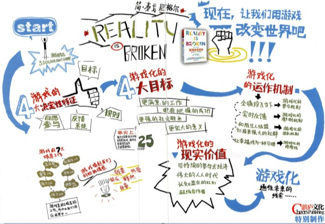
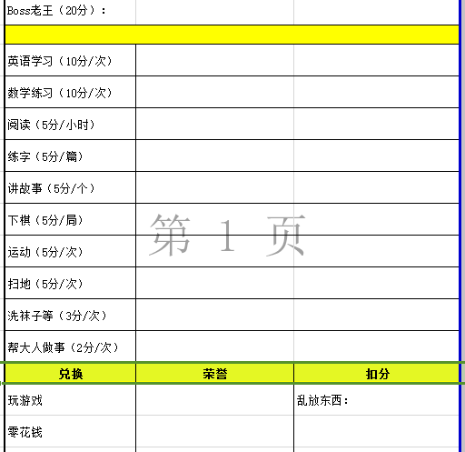

目标、规则、反馈系统、自愿参与
这让我想到，怎样提供工作和学习的效果，并且自愿参与，不觉厌烦。
我为了儿子制作了周任务卡，没有设定主任务（相当于老王或boss），设定每天可能任务（一般任务），供孩子选择，每完成一项任务，按照规则加分，获得荣誉加分（游戏中的奖励），各种犯规要扣分（被小怪给打了）。

在工作中，制定目标一定要可度量，所以类似燃尽图很重要，可以看任务进展，实时反馈。
微信仅只是聊天，就能汇集那么多人。游戏的诱惑比聊天大得多，可以想象用游戏把你的亲朋好友联系在一起。你可以远方的父母一起玩麻将、斗地主，你们可以比积分， 是多么美妙。
但是目前还没有这样的游戏。